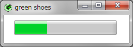

The Green Shoes Manual 1.1.354
Progress
プログレスバー（Progress bar）は活動がどこまで進んでいるかを表示します。 一般的には、プログレスバーはパーセンテージで示されます。 （0%から100%まで）Shoesは0.0から1.0の10進数を使って進行を考えます。 
シンプルなプログレスバーは200ピクセルの幅ですが、長くするために （すべてのGreen Shoesの要素のように）:widthスタイルは利用できません。
注意: Green Shoesでは、最小サイズが幅150ピクセルです。
Shoes.app do
title "Progress example"
@p = progress left: 10, top: 100, width: width-20
animate do |i|
@p.fraction = (i % 100) / 100.0
end
end
プログレスバーを含む、すべての要素に備え付けられたメソッドの一覧については Commonメソッドのページを見てください。
fraction() » a decimal number
どこまでプログレスバーが進んでいるかを指し示す、0.0から1.0の10進数の数を返します。
0.0から1.0の間の10進数の数で進行を設定します。
Next: Radio